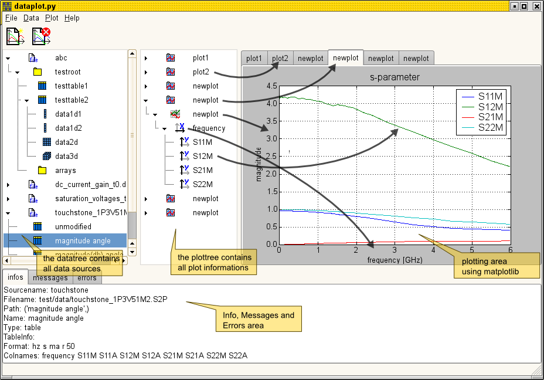
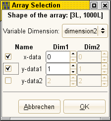
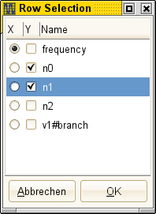
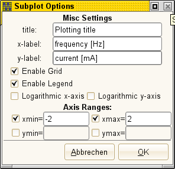

dataplot, a viewer for electrical data
The dataplot application aims to become a versatile data viewer
moslty designed for electronic developers. The application is
written with python using gtk widgets. The application heavily
relies on matplotlib for plotting and numpy for all data.
design overview
The application is splitted into the following main parts:
- The datatree on the left side stores all the different datasources.
- The plottree holds all informations about how to plot some of the data.
- The plotnotebook displays the plots with matplotlib.
- And on the bottom of the application there's a logging notebook for infos, ...
There's a one to one relationship between the plottree and the
plotnotebook. Where the first level refers the tabs of the
notebook. The second level can hold some subplots (not
implemented yet). The third holds the x-axis data and the 4th
holds the y-axis data.

datatree and datasource plugins
The datatree is a representation for all opened datasources. It can have the following entry types:
- datasource objects that represent a single datasource
- folder elements are used to create a tree like structure
- array elements with one to three dimensions
- table elements where a table has several named 1-dimentional data arrays
A datasource is opened with the data menu that contains an entry for each available datasource plugin.
A datasource plugin has a fixed interface that can load data files, return the tree structure of the
given dataset and has some access functions to get the data from a specific data element.
The currently available datasource plugins are:
- ngspice binary and ascii files
- gnucap ascii tables
- touchstone s-parameter files
- hdf5 a small subset of hierarchical data format files
When activating (double-clicking) an array with 2 or 3 dimensions,
you can select a single 1d-array with the following dialog:

The dialog just generates one or more slices of the selected data
that would be generated with the array operator like "data[:,2]"
or data[2,2,:] with python. You can select one vector as
x-data and one or more as y-data. Accepting the input of the
dialog will add the selected vectors to the current plot.
When activating an table entry you can select one column of the data as x-data and
one or more as y-data.
If you select no x-data, a generic x-data vector will be used.

The selected vectors are stored as references to the datasource
with the three variables datasource, path, slicer. The path refers
the interal location inside the datasource. The slicer either
contains the column name for tables and a slicing description for
arrays.
plottree and plotting
The options for a current subplot can be set with a dialog. It is
opened when activating the subplot node.

Basic scrolling and paning can be done with the mouse wheel.
development and source code
This small application is currently under development. If you like to play with it you can get the source
from the git repository http://repo.or.cz/w/dataplot.git.
todo
Here's a list of features that I plan to code:
- more zooming, paning modes with toolbar icons
- more than one subplots inside of each plot notebook
- color and style options for the lines
- handling of 1d-arrays
- operators for simple data manipulations (abs, imag, real, angle, invert, ...)
- reload of datasources (handle missing files, missing data, ...)
- paranoid error checking for every operation
- error and message logging
- cursors and markers
- dbus interface
- printing and exporting
Werner Hoch
Last modified: Mon Aug 18 20:56:03 CEST 2008